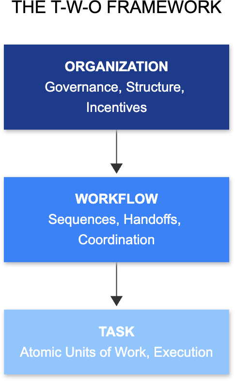

The T-W-O Framework
Task-Workflow-Organization: A Framework for AI Transformation
T-W-O (Task–Workflow–Organization) is a framework for AI transformation that explains how organizations redesign and reallocate capabilities one task at a time, across workflows and organizational boundaries, between humans, AI systems, and external providers.
The Missing Middle
Most AI strategies operate at the wrong level. At the top, leaders declare organization-level ambitions: becoming "AI-first" or transforming customer experience. At the bottom, teams run task-level experiments: drafting emails, summarizing documents, automating reports. What's missing is the layer that connects the two: the workflow.
Workflows are where value is created. They are the end-to-end sequences of handoffs, decisions, checkpoints, and exceptions that produce outcomes customers care about. When AI is applied only to individual tasks without redesigning the workflows those tasks belong to, improvements remain local. They don't compound.
The Framework
The T-W-O framework (Task, Workflow, Organization) provides a structured approach to connect AI strategy to execution:

- Organization provides the structure that owns workflows: roles, incentives, accountability, governance, and investment decisions. Without organizational alignment, workflow redesign cannot stick.
- Workflows are end-to-end sequences of tasks that produce outcomes. They determine how information flows, where decisions are made, and how capabilities are allocated between humans and machines. Workflows are the "missing middle" where individual task improvements either compound or cancel out.
- Tasks are the atomic units of work—discrete activities with clear inputs and outputs. For each task, the question is simple: should this be performed by a human, an AI system, or an external provider?
Current Projects
Position Paper: "The Missing Middle"
Co-authored with Hemant Bhargava, this position paper explores why AI pilots multiply while transformation lags. It introduces the concept of the validation tax—the hidden overhead organizations pay when they automate tasks without redesigning workflows.
The paper demonstrates how AI transformation is fundamentally about capability reallocation: determining which capabilities should remain human, which can be delegated to AI, and how workflows must change to support that allocation.
Business Novel (In Progress)
A narrative exploration of the T-W-O framework through the story of an organization attempting AI transformation. The novel dramatizes the framework's concepts through realistic scenarios and characters, making the methodology accessible to practitioners.
Practitioner Toolkits
A suite of diagnostic tools and implementation guides designed to help organizations:
- Map tasks and workflows systematically
- Measure validation tax and automation readiness
- Design capability ownership models
- Implement workflow redesign incrementally
- Align organizational structures with new ways of working
Key Insights
The Evaluator Age
Generative AI introduces a fundamental shift: knowledge workers are transitioning from producers to evaluators, moving from creating from scratch to assessing and overseeing machine-generated outputs. This transition changes the nature of knowledge work and requires new organizational structures.
The Validation Tax
Organizations often experience a hidden cost when adopting AI: they must do the work, and then do additional work to verify the AI's output. Without workflow redesign, this validation tax can exceed the productivity gains from automation, explaining why many AI pilots fail to scale.

Incremental Transformation
Unlike past digital transformations that attempted wholesale system replacement, the T-W-O approach enables organizations to transform incrementally—replacing "one engine at a time" rather than attempting to overhaul the entire system at once. This reduces risk while enabling continuous learning and adaptation.
Applications
The framework has been applied across multiple domains, including:

- Software Development: Redesigning feature delivery workflows around AI capability blocks and human checkpoints, transforming developers from code writers to capability managers
- Customer Support: Restructuring escalation pathways and quality assurance processes
- Document-Intensive Workflows: Reimagining legal review, contract analysis, and compliance processes
- Data Analysis: Reconfiguring analytical workflows around human judgment and machine processing
Stay Updated
The T-W-O initiative is actively evolving. For updates, you can reach out at weichen@genai4all.org.